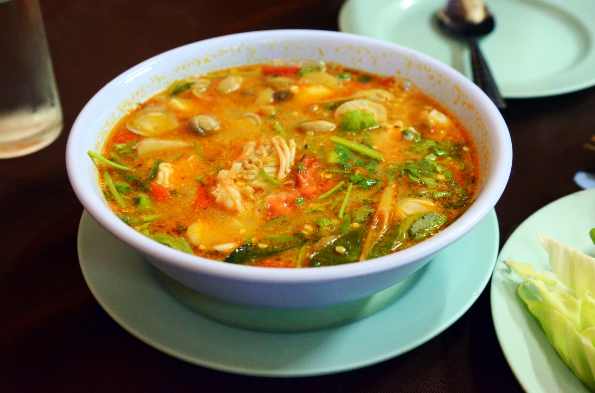

A Thai Classic
Tom Yum Soup
Recipe by: Nagi Maehashi. "Tom Yum Soup (Thai Soup)." www.recipetineats.com/tom-yum-soup-thai/.

Photo by Takeaway, CC BY-SA 3.0 https://creativecommons.org/licenses/by-sa/3.0, via Wikimedia Commons.
Ingredients
- 300 g (10 oz) whole shrimp with heads and shells on
- 3 cups (750 ml) water
- 1/2 cup (125 ml) low-sodium chicken stock
- 2 stalks lemongrass, outer layers peeled
- 1.5 cm / 3/5 inch piece of galangal
- 5 kaffir lime leaves
- 2 Thai or birseye chilies
- 3 garlic cloves
- 120 g / 4 oz oyster mushrooms
- 1 Roma tomato, cut into wedges
- 1/2 white onion (medium sized), cut into wedges about 1 cm thick
- 1 teaspoon sugar
- 3 tablespoons fish sauce
- 3 tablespoons lime juice
- Fresh cilantro/coriander, for garnish
Equipment
- Large pot with a lid
- Cutting board
- Sharp knife
- Meat mallet (or similar) for bruising the aromatics
- Fine strainer
- Measuring cups and spoons
- Ladle and serving bowls
Directions
- Peel the shrimp. Put the heads and shells in the pot and set the shrimp meat aside.
- Smash the garlic, chilies, and lemongrass with the mallet so they split open and release their flavor, then add them to the pot.
- Crush the kaffir lime leaves by hand and add them to the pot along with the galangal, stock, and water.
- Bring to a simmer over high heat, cover, lower the heat to medium, and simmer for 10 minutes.
- Strain the broth, throw away the solids, and return the broth to the pot over low heat.
- Add the onion and mushrooms and simmer for 3 minutes, then add the tomato and simmer for 1 more minute.
- Add the shrimp and simmer for about 2 minutes, until just cooked.
- Stir in the sugar and fish sauce and simmer for 1 minute.
- Add the lime juice, taste, and adjust the sweetness (sugar), saltiness (fish sauce), and sourness (lime) to your liking.
- Ladle into bowls and top with fresh cilantro and chili. Serves 2.
This page created as academic activity only.